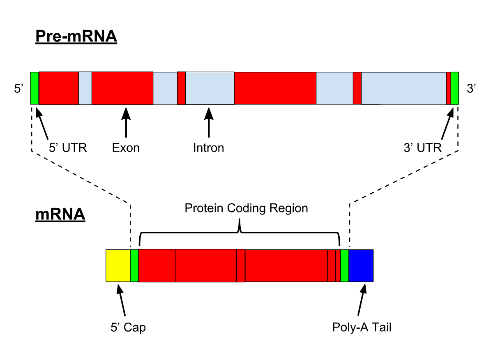

2 mRNA, tRNA e rRNA
2.1 Identifique as funções de cada um
O mRNA é o responsável por carregar a informação codante do genoma, gerado no processo de transcrição, ele é o passo inicial para a produção de proteínas.
O tRNA é aquele que irá interpretar a informação contida no mRNA processado, se ligando aos seus códons e trazendo consigo o respectivo aminoácido.
O rRNA, por fim, será aquele responsável pela consolidação final da informação proteica, ao trafegar pelo mRNA, indica quais tRNAs devem se ligar e une os seus respectivos aminoácidos para a formação da proteína.
2.2 Nomeie as regiões de um RNA mensageiro

Inicialmente, o mRNA possui 3 principais componentes: Os íntrons, que não codificam a informação proteica final, os éxons, a porção codante, e as UTRs em cada ponta, que são, também, regiões não traduzidas. Após o processamento, observa-se a adição de um “capacete” na extremidade 5’ e uma sequência poli-A na extremidade 3’, ambas estruturas que auxiliam na proteção do mRNA de exonucleases.
2.3 Geração e modificações pós-transcricionais
2.3.1 mRNA
(Oxford)
A transcrição, em eucariotos, ocorre por meio da RNA Polimerase II, que junto a um ou mais fatores de transcrição, se liga ao promotor, formando a bolha de transcrição, posteriormente, à medida que as ligações de hidrogênio vão sendo quebradas pela forquilha, vai se formando a fita, com a adição de nucleotídeos de RNA complementares. Ao fim deste processo teremos o pre-mRNA, que passará pelo processamento mencionado em 2.2
2.3.2 tRNA
Seus genes, localizados no nucléolo, são transcritos pela RNA Polimerase III. Em seguida ocorre o processamento do pre-tRNA formado, iniciando com a remoção de certas sequências, tanto na ponta 3’ quanto na 5’. Vale destacar que inicialmente alguns tRNAs possuem íntrons, que em procariotos se auto-removem, mas em eucariotos e arqueas são removidos por endonucleases, que reconhecem sua região BHB. Por fim, há a adição de CCA na sua extremidade 3’, posteriormente a isso o tRNA ainda pode passar por diversos processamentos, a depender do aminoácido ao qual se relaciona.
E, ultimamente, é claro, há a reação de aminoacilação quando o tRNA for executar sua função na célula.
2.3.3 rRNA

Em eucariotos, ocorre no nucléolo, com a síntese do 45S pela RNA Polimerase I, este possuinte de regiões interespaçadas transcritas que assemelham íntrons, e no núcleo, com a síntese do 5S pela RNA Polimerase III. O 45S, após passar por modificações realizadas por snoRNAs, como metilação e pseudouridilação, tem seus espaçadores clivados. Os fragmentos resultantes se unem a proteínas ribossomais, formando as duas subunidades conhecidas, a 40S e a 60S.
2.4 Edição de RNA
É o processo no qual ocorrem modificações no RNA que não refletem mutações na sequência genômica original. Essas modificações podem ser inserções, deleções e substituições. Algumas modificações de nota são:
Edição do gene da ApoB - uma troca de C para U - reflete nas isoformas observadas da proteína no organismo, a ApoB-100 (hepática) e a ApoB-48 (intestinal), essa última que possui seu tamanho reduzido pois a troca gera um códon de parada.
Conversão de A para Inosina pela ADAR em miRNAs, que pode impedir o processamento por DROSHA e DICER.